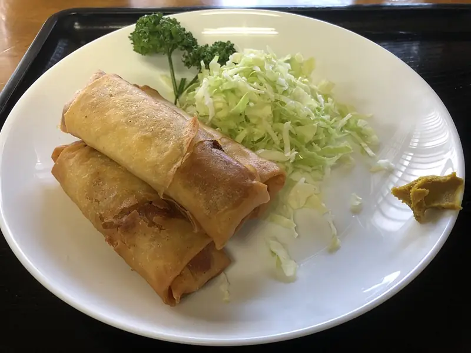

Фото: Ocdp, CC0

Куриные рулетики с сыром
Отбитое куриное филе с сырно-чесночной начинкой, запечённое в духовке
50 мин4 порц.321 ккал на порциюБ 44 · Ж 15 · У 2Интернациональная кухня
Продукты на 4 порц.
- Куриное филе3 шт
- Сыр твёрдый120 г
- Сметана 20%2 ст. л.
- Чеснок1 зуб.
- Укроп10 г
- Соль1 ч. л.
- Перец чёрный молотый2 щеп.
- Растительное масло2 ч. л.
Как готовить
- Разрежьте каждое филе вдоль на 2 пласта, накройте плёнкой и отбейте до толщины 5-7 мм. Посолите и поперчите.
- Сыр натрите, смешайте со сметаной, давленым чесноком и рубленым укропом.
- Распределите начинку по филе, отступив 1 см от краёв, плотно сверните рулетами и закрепите зубочистками.
- Выложите швом вниз в смазанную маслом форму.
- Запекайте при 180 °C (средний жар) 25-30 минут до золотистого цвета и прозрачного сока. Перед подачей выньте зубочистки.
Совет. Плёнка при отбивании не даёт мясу рваться. Остывшие рулетики режутся кружками и подходят как холодная закуска.